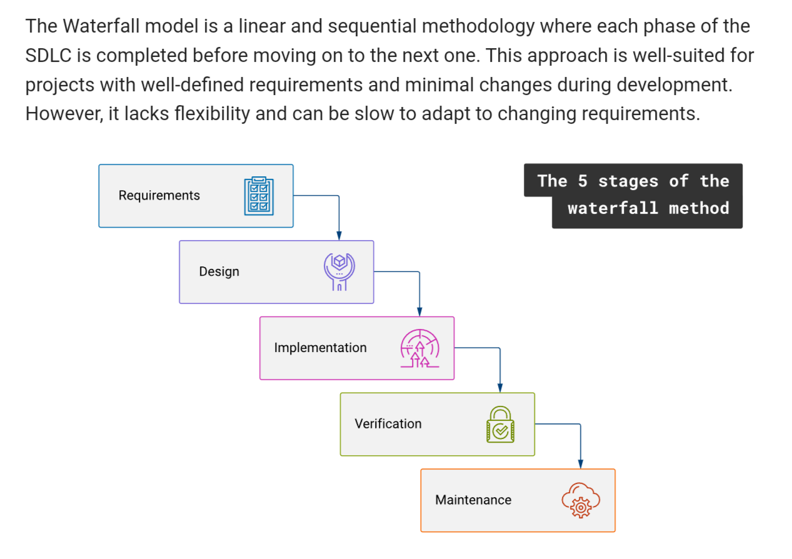
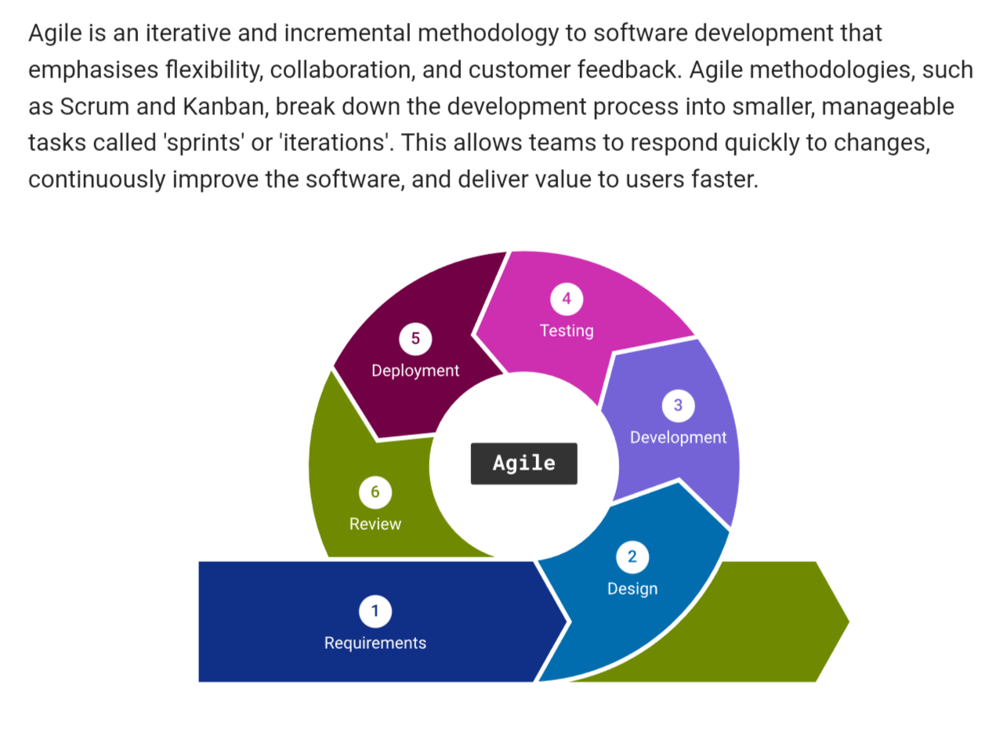
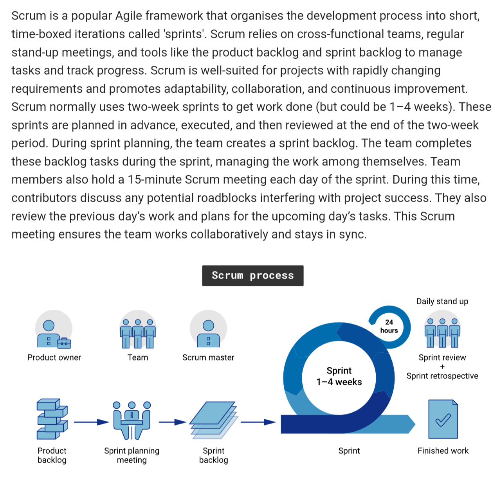
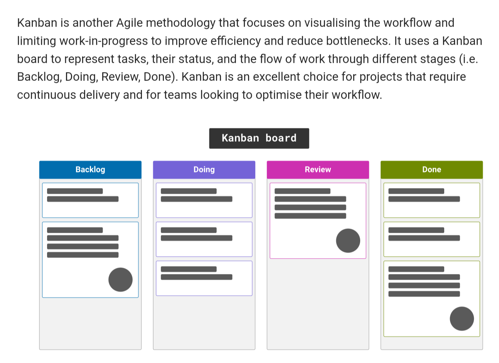
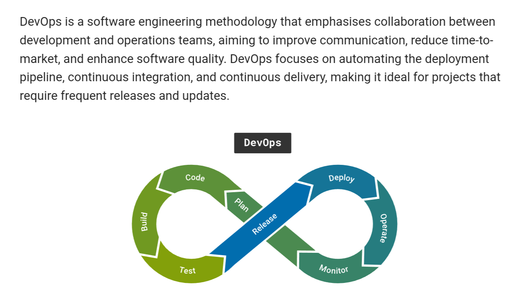
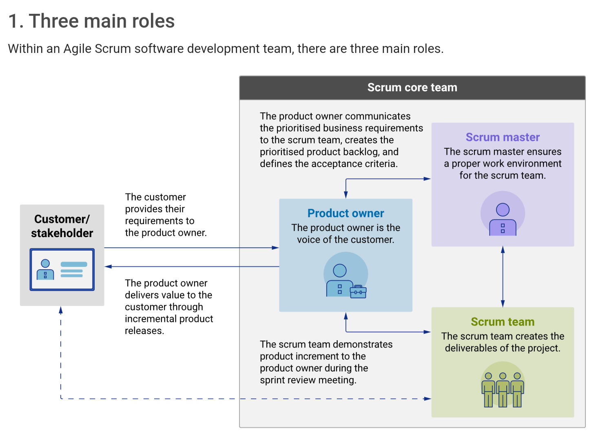

Module 1: Introduction to Software Engineering
Software Engineering: "The application of a systematic, disciplined,
quantifiable approach to the development, operation, and maintenance
of software; that is, the application of engineering to software."
- IEEE Standard 610.12
A program is executable code, software is a collection of executable
code with libraries and documentation.
Software Development Lifecycle (SDLC)
Leads to higher quality, better collaboration, reduced risk, and
improved project management.
Analysis
- Gather and analyse user requirements
- Work with stakeholders to define scope, features, and
functionality
- Team members: Product Owner, Project Manager, Business Analyst,
CTO
Design
- Blueprint with architecture, components, and data flow
- Design UI
- Select algorithms
- Team members: System Architect, UI/ UX Designer
Development
- Write code which is efficient, modular, and maintainable
- Team members: Front-end Dev, Back-end dev
Testing
- Testing and debugging
- Unit tests, integration tests, system testing
- Team members: Solution Architect, QA engineer, Testers, DevOps
Deployment
- Deploy software to stores, websites, etc.
- Team members: Data Administrator, DevOps
Maintenance
- Continuous monitoring and updating
- Bug fixes, adding new features, etc.
- Team members: Users, Testers, Support Managers
Software Engineering Methodologies
Sets of principles and practices that guide the development process.
Waterfall

Agile

Scrum

Kanban

DevOps

Agile Scrum
Agile Manifesto four key values.
- Individuals and interactions over processes and tools
- Working software over comprehensive documentation
- Customer collaboration over contract negotiation
- Responding to change over following a plan
Empahsises collaboration, flexibility, and customer satisfaction.
Three Main Roles in Scrum
Product Owner: setting clear direction
- Represents the business or user community
- Responsible for working with the user group to determine which
features will be in the product release
- Gather and create goals or user stories
- Create, manage and prioritise product backlog
- Interact with clients or management
- Identify more areas to work on
- Tell developers what to deliver
- Release management
- Stakeholder management
Scrum Master: holding it all together
- Help the Product Owner define value, the dev team deliver value,
and the scrum team to improve
- Transparency: create story maps, etc.
- Empiricism: coach the scrum team to break down work, describe clear
outcomes, and review outcomes
- Self-organisation
- Scrum values: courage, focus, commitment, respect, and openness -
for psychological safety and trust
- Protect the team
- Remove blockers
- Create a list of tasks
- Distribute work equally
- Track progress frequently
- Spot improvement opportunities
Scrum/ Development Team: redefining "developer"
- Self-organisation
- UX
- Design
- Testing
- Development
- Delivery
- Drive the plan for each sprint
- Stay focused and self-organised
- Cross-train each other
- Approach project with a "we" attitude

Key Steps in Agile Scrum Project Management
- Define the project vision
- Identify the project goals and objectives
- Define the scope and vision of the project
- Backlog grooming (refinement)
- Create the product backlog
- List all features, enhancements, and tasks
- Prioritise items based on customer value and project
goals
- Review and refine items in the backlog
- Sprint planning
- Select items from product backlog for upcoming sprint
- Define the sprint goal and tasks required to achieve
it
- Items are selected for the sprint based on priority and
capacity
- Sprint is typically 2-4 weeks
- Daily stand up meetings (daily scrum)
- Brief meeting to synchronise activities and talk about what
has been accomplished, what needs to be done next, and any
obstacles
- Keeps team aligned with goals and identifies issues
early
- Sprint Review
- Demonstrate completed work to stakeholders
- Collect feedback for improvement
- Allows for quick adaptation to changes, continuous
integration, and ability to release a potentially
shippable product
- Sprint Retrospective
- Discuss what went well, what could be improved, and how to
implement improvements in next sprint
- Continuous improvement is a key principle of agile
- Helps the team reflect on their process and adapt to work
more efficiently
- Repeat
- Repeat process with a new sprint, incorporating feedback
and adapting to changes